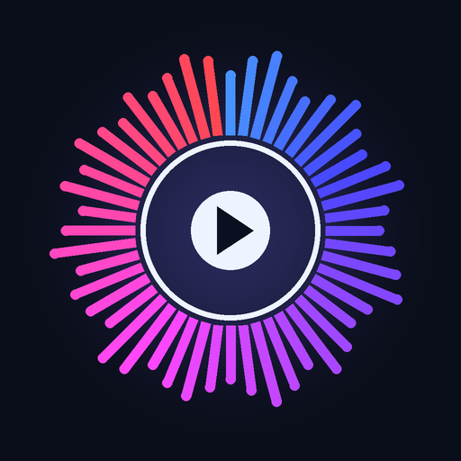

느리게 들으면, 정확하게 익힙니다. 음정 유지 배속 연습 플레이어
Hear it slower. Learn it right.
25%~200%, 느려도 음정 그대로. Pitch-preserved speed, 25–200%.
반음 단위 ±12 — 키를 바꿔 연습. Shift the key by semitones.
어려운 마디만 무한 반복. Loop just the hard bars.
악기·보컬을 강조하거나 줄이기. Boost or cut any part.
박자·세분음 지원. Beats & subdivisions.
원곡 위에 내 연주·목소리 녹음. Record yourself over the track.
귀카피·프레이즈 연습. 11종 비주얼라이저로 소리를 눈으로. Music mode with 11 visualizers.
영상에서 자막·번역 자동 생성, 듣고 따라 말하기. Auto subtitles & translation from video.